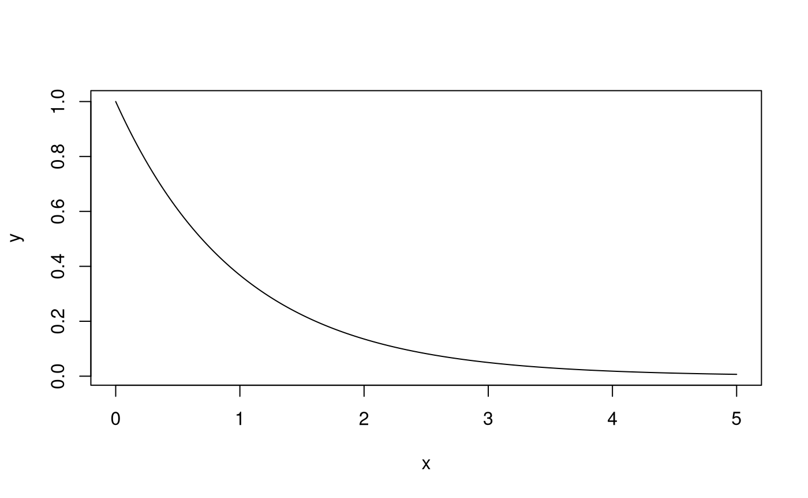
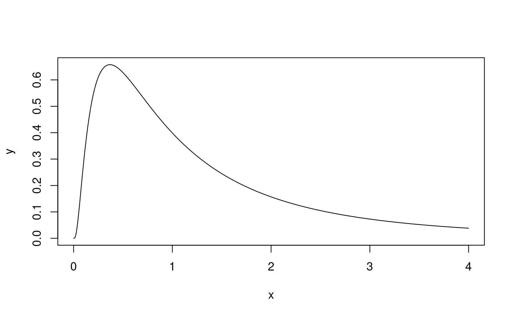
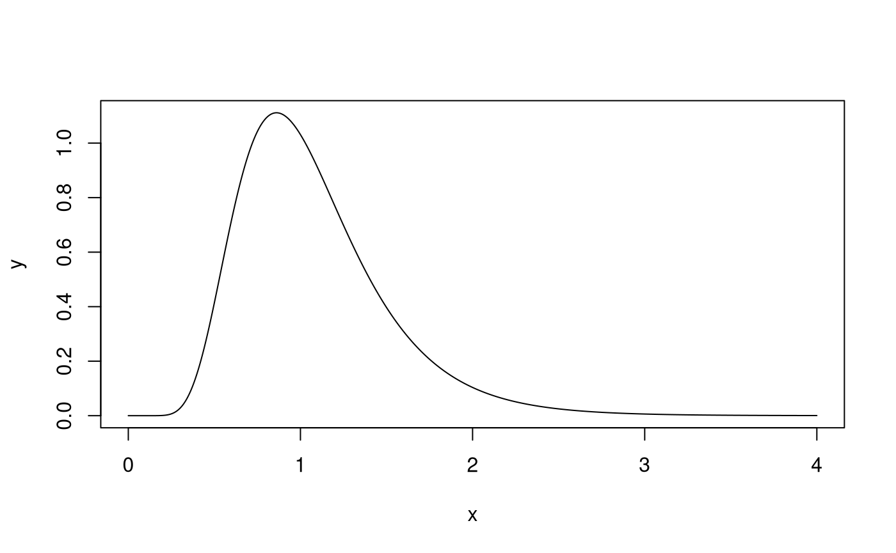
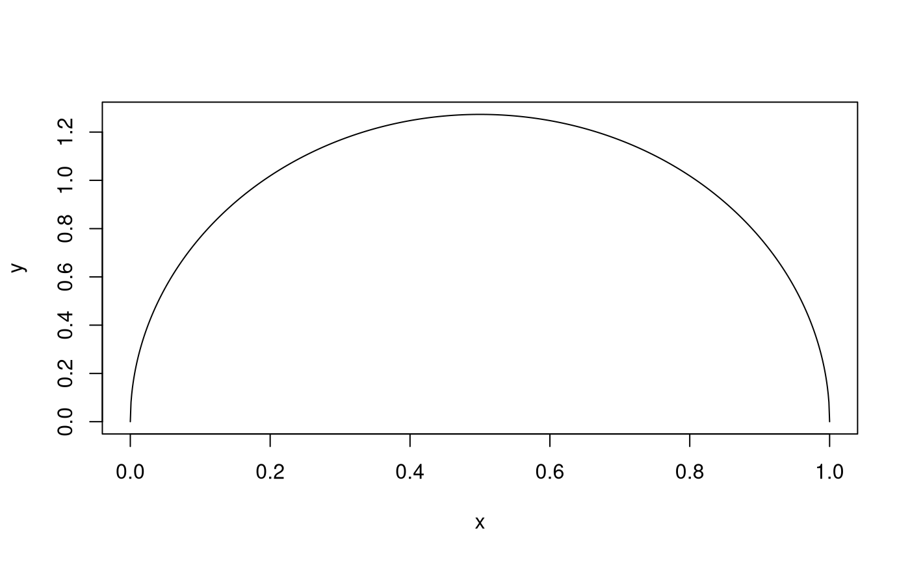
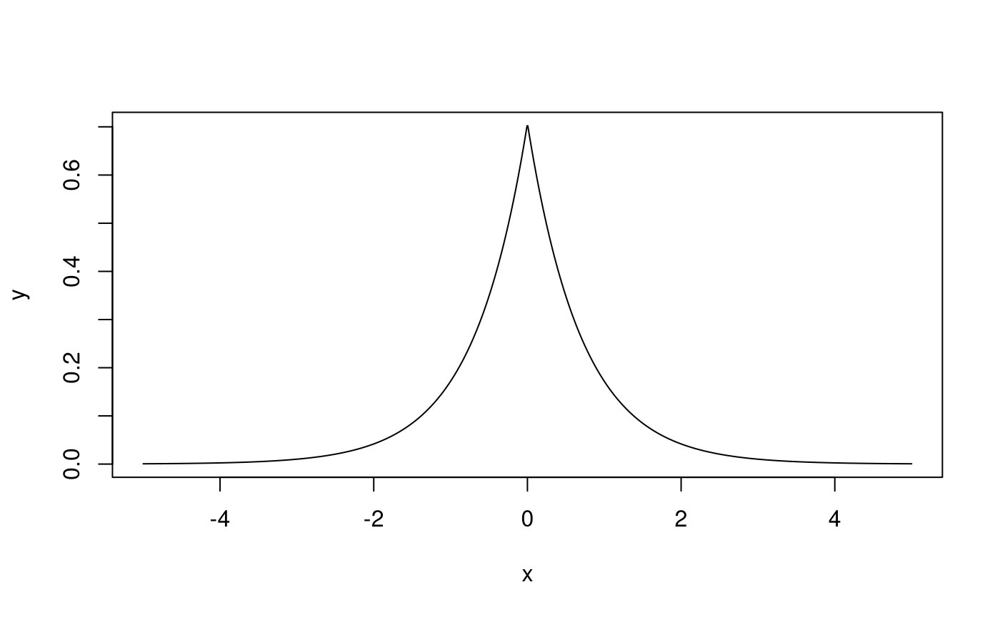
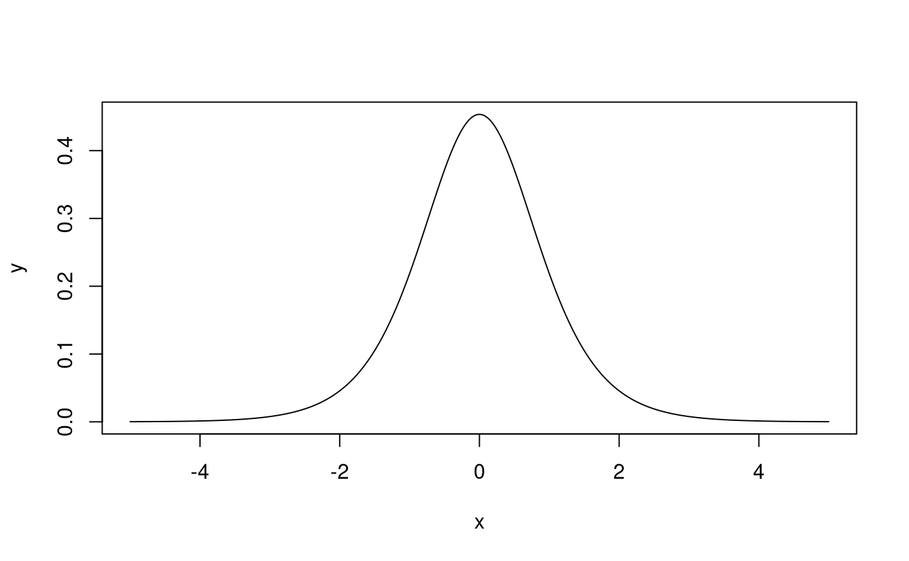
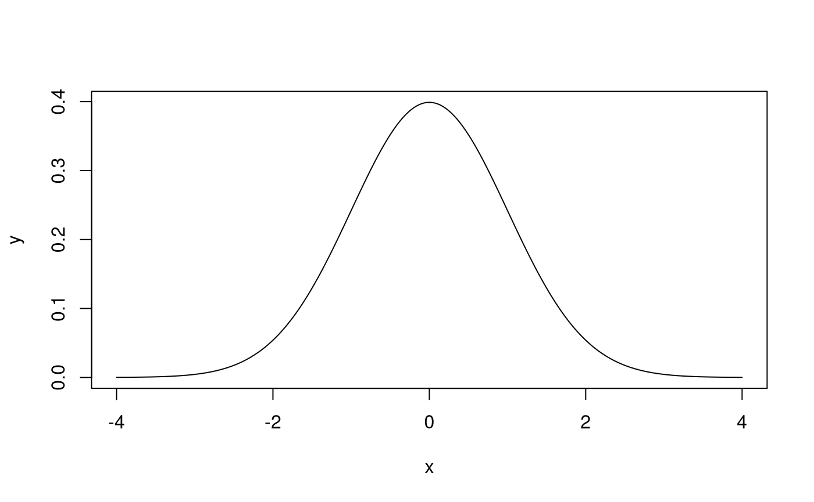
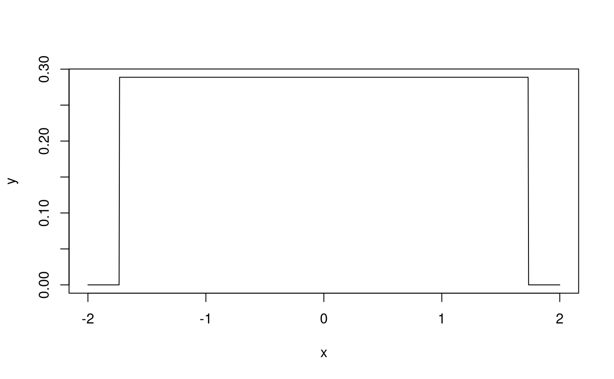
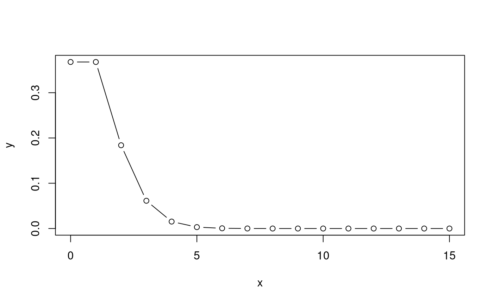

vignettes/nonnormal_distributions.Rmd
nonnormal_distributions.Rmd\[\begin{equation} X \sim \exp \left( \lambda = 1 \right) \end{equation}\]
| Moments | Formula | Value |
|---|---|---|
| Mean | \(\frac{1}{\lambda}\) | 1 |
| Variance | \(\frac{1}{\lambda^2}\) | 1 |
| Skewness | 2 | 2 |
| Excess Kurtosis | 6 | 6 |

\[\begin{equation} X \sim Lognormal \left( \mu = 0, \sigma = 1 \right) \end{equation}\]
| Moments | Formula | Value |
|---|---|---|
| Mean | \(\exp \left( \mu + \frac{\sigma^2}{2} \right)\) | 1.648721 |
| Variance | \(\left[ \exp \left( \sigma^2 \right) - 1 \right] \exp \left( 2 \mu + \sigma^2 \right)\) | 4.670774 |
| Skewness | \(\left[ \exp \left( \sigma^2 \right) + 2 \right] \sqrt{ \exp \left( \sigma^2 \right) - 1}\) | 6.184877 |
| Excess Kurtosis | \(\exp \left( 4 \sigma^2 \right) + 2 \exp \left( 3 \sigma^2 \right) + 3 \exp \left( 2 \sigma^2 \right) - 6\) | 110.936392 |

\[\begin{equation} X \sim Lognormal \left( \mu = 0, \sigma = 0.3869 \right) \end{equation}\]
| Moments | Formula | Value |
|---|---|---|
| Mean | \(\exp \left( \mu + \frac{\sigma^2}{2} \right)\) | 1.0777180 |
| Variance | \(\left[ \exp \left( \sigma^2 \right) - 1 \right] \exp \left( 2 \mu + \sigma^2 \right)\) | 0.1875505 |
| Skewness | \(\left[ \exp \left( \sigma^2 \right) + 2 \right] \sqrt{ \exp \left( \sigma^2 \right) - 1}\) | 1.2704099 |
| Excess Kurtosis | \(\exp \left( 4 \sigma^2 \right) + 2 \exp \left( 3 \sigma^2 \right) + 3 \exp \left( 2 \sigma^2 \right) - 6\) | 3.0006758 |

\[\begin{equation} X \sim Beta \left( \alpha = 1.5, \beta = 1.5 \right) \end{equation}\]
| Moments | Formula | Value |
|---|---|---|
| Mean | \(\frac{\alpha}{\alpha + \beta}\) | 0.5000 |
| Variance | \(\frac{\alpha \beta}{\left( \alpha + \beta \right)^2 \left( \alpha + \beta + 1 \right)}\) | 0.0625 |
| Skewness | \(\frac{2 \left( \beta - \alpha \right) \sqrt{\alpha + \beta + 1}}{\left( \alpha + \beta + 2 \right) \sqrt{\alpha \beta}}\) | 0.0000 |
| Excess Kurtosis | \(\frac{6 \left[ \left( \alpha - \beta \right)^2 \left( \alpha + \beta + 1 \right) - \alpha \beta \left( \alpha + \beta + 2 \right) \right]}{\alpha \beta \left( \alpha + \beta + 2 \right) \left( \alpha + \beta + 3 \right)}\) | -1.0000 |

\[\begin{equation} X \sim Laplace \left( \mu = 0, b = 0.7071068 \right) \end{equation}\]
| Moments | Formula | Value |
|---|---|---|
| Mean | \(\mu\) | 0 |
| Variance | \(2b^2\) | 1 |
| Skewness | 0 | 0 |
| Excess Kurtosis | 3 | 3 |

\[\begin{equation} X \sim Logistic \left( \mu = 0, s = 0.5513289 \right) \end{equation}\]
| Moments | Formula | Value |
|---|---|---|
| Mean | \(\mu\) | 0.0 |
| Variance | \(\frac{s^2 \pi^2}{3}\) | 1.0 |
| Skewness | 0 | 0.0 |
| Excess Kurtosis | \(\frac{6}{5}\) | 1.2 |

\[\begin{equation} X \sim \mathcal{N} \left( \mu = 0, \sigma = 1 \right) \end{equation}\]
| Moments | Formula | Value |
|---|---|---|
| Mean | \(\mu\) | 0 |
| Variance | \(\sigma^2\) | 1 |
| Skewness | 0 | 0 |
| Excess Kurtosis | 0 | 0 |

\[\begin{equation} X \sim \mathcal{U} \left( a = -1.7320508, b = 1.7320508 \right) \end{equation}\]
| Moments | Formula | Value |
|---|---|---|
| Mean | \(\frac{1}{2} \left( a + b \right)\) | 0.0 |
| Variance | \(\frac{1}{12} \left( b - a \right)^2\) | 1.0 |
| Skewness | 0 | 0.0 |
| Excess Kurtosis | \(-\frac{6}{5}\) | -1.2 |

See https://en.wikipedia.org/wiki/Uniform_distribution_(continuous).
\[\begin{equation} X \sim Pois \left( \lambda = 1 \right) \end{equation}\]
| Moments | Formula | Value |
|---|---|---|
| Mean | \(\lambda\) | 1 |
| Variance | \(\lambda\) | 1 |
| Skewness | \(\lambda^{\left( - \frac{1}{2} \right)}\) | 1 |
| Excess Kurtosis | \(\lambda^{\left( -1 \right)}\) | 1 |
